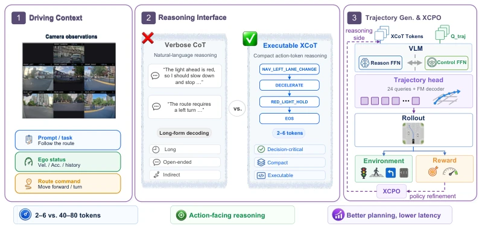
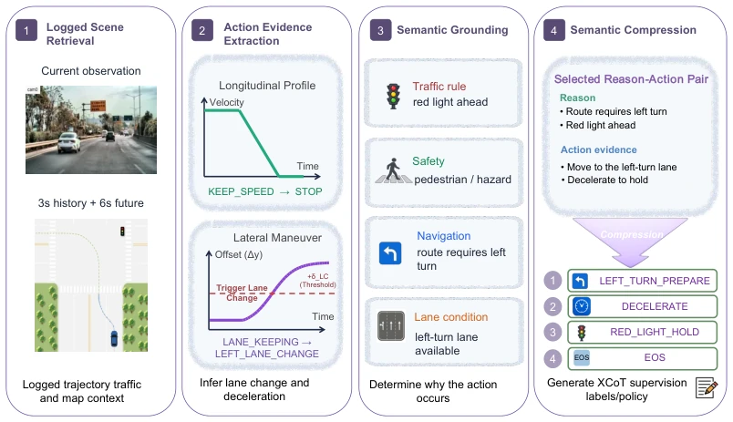
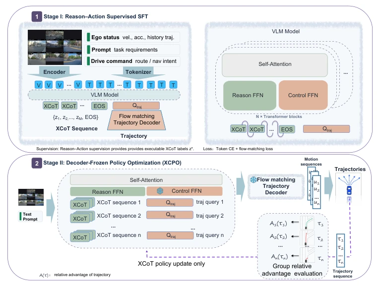
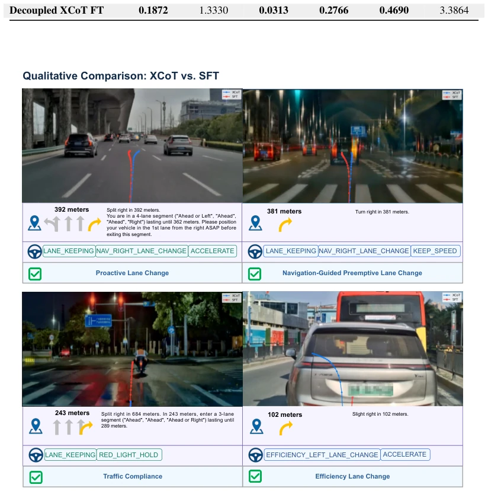

This paper finally cures the "writing essays" flaw of autonomous driving VLA models. Previously, CoT often involved 40-80 tokens of verbose content, which not only slowed decoding but also decoupled from actions. XCoT-VLA directly employs 2-6 executable tokens, hard commands such as "decelerate" or "lane change", which are compact and can directly control trajectories. However, do not celebrate too soon; the main improvements lie in open-loop planning ADE/FDE, while closed-loop safety metrics are not yet solidified. The XCPO optimization part is also described as "optional", without detailed data provided, appearing somewhat like an attempt to capitalize on the RL trend. Furthermore, relying on offline logs to construct Reason-Action pairs, when encountering long-tail scenarios not covered by the training set, whether this "executable" reasoning might turn into "executable crashing"? In conclusion, engineering deployability is indeed strong, but generalization ability remains to be seen.
Autonomous driving VLA models require semantic reasoning, yet existing methods predominantly rely on natural language CoT. For instance, while CoT proposed in [4] can stimulate reasoning, free-text reasoning contains irrelevant information, and autoregressive decoding introduces additional latency [16]. In real-time control, this "verbose CoT" is difficult to directly map to continuous trajectories. Existing driving VLA methods such as DriveLM [13] or AutoVLA [12], although introducing language reasoning, mostly still utilize natural language or structured text, failing to address the interface efficiency problem from reasoning to action. XCoT-VLA aims to resolve this contradiction: reasoning should be critical, compact, and executable, rather than verbose explanations.

Figure 1: Overview of XCoT-VLA. Given multimodal driving context, XCoT-VLA replaces verbose natural- language CoT with 2–6 compact executable action tokens that capture decision-critical driving intents and condition flow-matching trajectory generation. The same XCoT space also supports XCPO for reward-driven reasoning-policy refinement with a frozen execution stack.
The overall process is divided into two stages: data construction and model training. First, offline construction of XCoT training data: extract action evidence from log trajectories (e.g., acceleration/deceleration, lane change), combine with scene context (navigation, rules) to generate Reason-Action pairs, then compress into 2-6 standard XCoT tokens (e.g., `RED_LIGHT_HOLD`). The model architecture adopts a VLA backbone, with the core innovation being Deterministic Token-Function Routing: all non-trajectory tokens (including XCoT) enter the Reason FFN, 24 trajectory queries enter the Control FFN, and the two interact via shared self-attention. Stage I jointly trains XCoT prediction and Flow-Matching trajectory generation, utilizing Token CE and Flow Matching Loss; Stage II introduces XCPO, freezing the execution stack (vision, Control FFN, etc.), and only optimizing the Reason FFN to maximize trajectory reward. During inference, the XCoT sequence serves as conditional input, directly controlling trajectory generation, significantly reducing autoregressive overhead.

Figure 2: Offline XCoT training-data construction pipeline. The logged future trajectory provides longitudinal and lateral action evidence, while scene context supplies navigation-, rule-, interaction-, and safety-related causes. The selected Reason–Action pair is then mapped to a canonical XCoT sequence.

Figure 3: Overview of XCoT-VLA training and deterministic token-function routing. All valid non-trajectory tokens are processed by the Reason FFN, while only the 24 trajectory queries are processed by the Control FFN. Both branches interact through shared multimodal self-attention. In Stage II, the visual front-end, self-attention, Control FFN, and trajectory head are parameter-frozen, whereas the Reason FFN and XCoT prediction head remain trainable. Consequently, the execution stack remains fixed, but the non-trajectory representations conditioning the trajectory queries may change across policy iterations.
Trained on a 3.6M mixed dataset, comparing Trajectory-only, Verbose CoT, and Latent tokens baselines. Open-loop planning results show that XCoT-VLA reduced longitudinal ADE from 1.645 to 1.323 on the general set, and lateral FDE from 1.616 to 0.648 in lane change scenarios, significantly outperforming other variants. Ablation experiments indicate that XCoT supervision itself contributed an 18.3% lateral ADE improvement. In latency tests, XCoT's worst case of 66.3ms meets the 12Hz budget, whereas Verbose CoT exceeds 279ms. Qualitative analysis shows XCoT is more forward-looking (e.g., early lane change). However, XCPO was not quantitatively evaluated, and longitudinal comfort improvement is limited.

Figure 4: Qualitative comparison between XCoT (blue) and the trajectory-only SFT baseline (red). Compared with SFT, XCoT consistently exhibits more proactive driving behaviors, including earlier lane changes in dense traffic and navigation-guided scenarios, proactive compliance with traffic-light constraints, and efficiency-driven lane changes with traffic-adaptive acceleration, leading to smoother and more efficient trajectory planning.